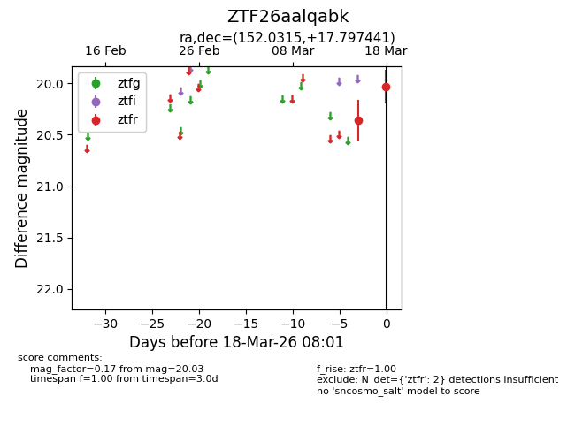
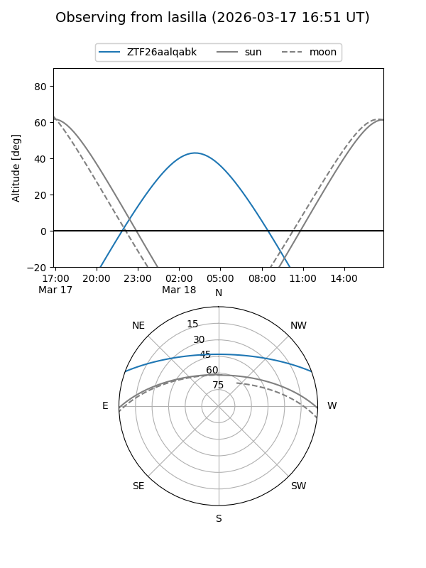
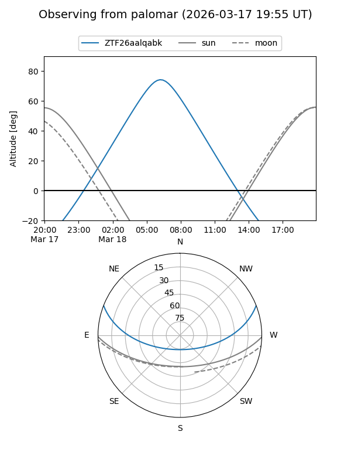
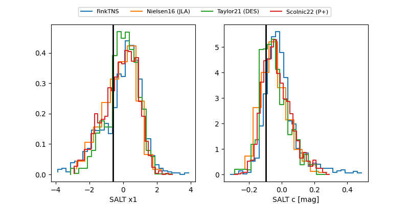

ZTF26aalqabk
Target ZTF26aalqabk at 2026-03-18 08:03
Aliases and brokers:
FINK: link
Lasair: link
ALeRCE: link
alt names
ZTF26aalqabk (ztf,fink_ztf)
Coordinates:
equatorial (ra, dec) = 152.0315,+17.79744
equatorial (HMS+DMS) = 10:08:07.57,+17:47:50.79
galactic (l, b) = (218.1174,+51.31346)
Flags:
Photometry:
last ztfr=20.03
2 ztfr detections
Lightcurve

Visibility


Additional plots
